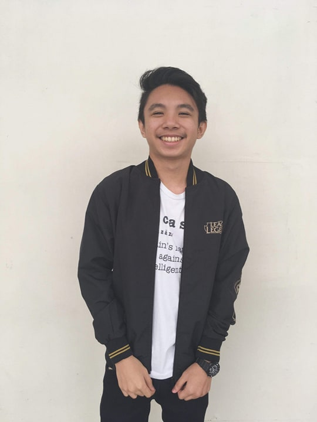
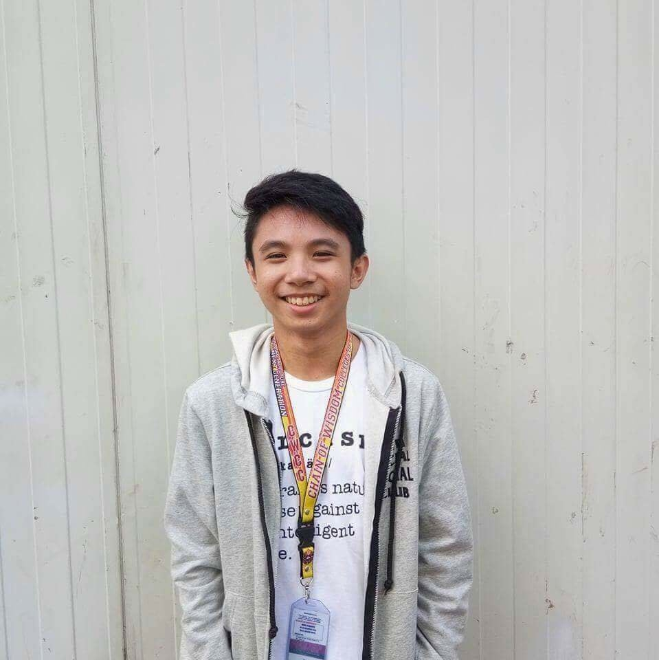
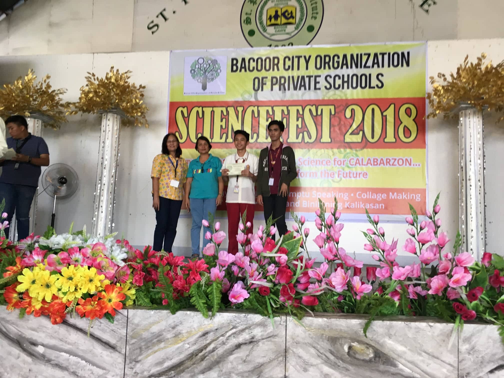
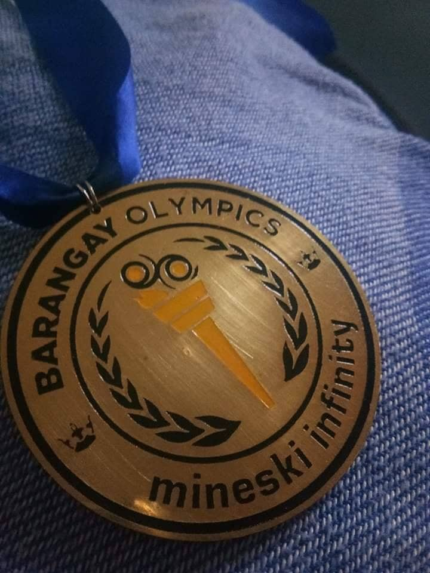

Who am I?

My name is Kevin Daniel C. Almirante, I am currently a first year student with a course of BSIT in CVSU-IMUS.
I am currently 19 years old and my birthday was on October 26, 2002. My father's name is Moji Almirante and my mother's name is Marilou Almirante.
I graduated as a valedictorian when I was in elementary, Junior Highschool and Senior High School.
My Hobbies are:
- Playing Computer Games
- Joining Local Tournaments (PC Games)
- Playing Badminton
- Watching Anime
- Self Studying
- Crypto
My Autobiography

My name is Kevin Daniel C. Almirante. I am 16 years old. I live at block 4 lot 23 Kimberton Village Niog II Bacoor, Cavite. My Birthday was on October 26,2002. I am Catholic. My Father's name is Moji F. Almirante and my Mother's name is Marilou C. Almirante. My hobbiesmputer games such as League of Legends, Defense of the Ancient, Counter Strike, Tekken, Mobile Legends and etc. I am currently first year college at CVSU IMUS with a stran are playing cod of BSIT and section of 1B. My favorite color is black partnered with blue and red.

When I was in elementary I enrolled to Bangkal Elementary School (main) in Makati from grade 1 to grade 3. It was a challenge for me back then. When I was a little kid, to walk while carrying 3 bags (backpack, lunch box and an attache case) was the hardest part of my elementary life. When I was in grade 3 that is my first time where I got an achievement which is becoming top 1 in the class even though we were 90+ students. After my recognition, I was transferred to Chain of Wisdom when I was in grade 4. It was my first time to be enrolled in private school. I studied at Chain of Wisdom since grade 4 until grade 10. I graduated senior highschool at STI college Bacoor with highest honor and as a top student. I am currently studying at CVSU Imus campus
Academics | Achievements

I was 12th placer in BCOPS Science Quiz Bee out of 50 schools/students. It was my first time winning at the BCOPS because since grade 4 I was the representative of Chain of Wisdom to compete with other schools. Everytime I join a contest or a quiz bee I always think that win or lose its okay atleast I did my best and everyone still loves me.
Since Grade 3 I always ended up as the highest among the class in ranking until grade 12. I became valedictorian when I was in grade 6, grade 10 and grade 12. To be honest I am not the most intelligent in the class, I am not good at anything especially in speaking english and I don't have any talent at all but I will always do my best and be myself.
Esports | Achievements

My first time winning a tournament as a champion with a prize money was on Mineski Infinity Bacoor. It was a League of Legends mix match tournament. It was unexpected because I was the youngest player in that tournament, that's the reason why I wasn't expecting to win the prize money. Until I got to play 6-8 hours straight in the tournament then we got the prize money without losing even one game.
I played competitively since grade 8. I always think of getting an experience in the tournament than expecting to win. For me, win or lose is not important atleast you did your best and you didn't lose hope. I am still currently playing League of Legends competitively and I had a sponsored team name 43rd Avenue. I won lots of tournament maybe 5-10 tournaments yet my parents still against of my passion that's why it's so hard to explain to them that its depend to the person whether they balance gaming and acads or not. My parents always think that gaming can make my life worst but I always think that one day I'll make them proud of me while playing professionally in the international stage.